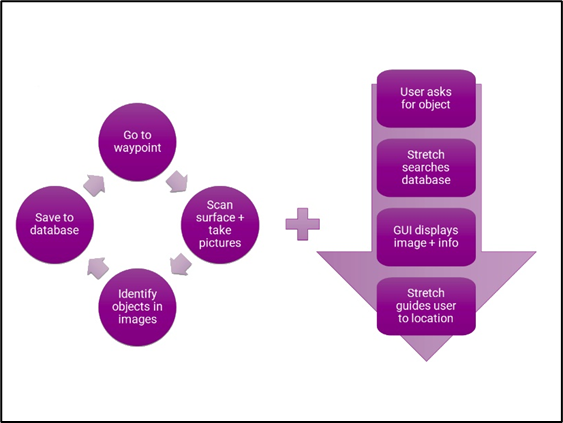

Mild Cognitive Impairment (MCI) is an early-stage decline in memory, language perception, visual perception, and/or other cognitive abilities that is greater than expected for an individual’s age and education level, but that does not greatly impact their ability to perform everyday activities [1]. Research has shown that this condition is present in 3-19% of people over the age of 65 [1]. Individuals who experience a decline predominantly in their memory capacity are said to have Amnestic MCI. One common symptom of this condition is misplacing objects due to the inability to recall where the item was last kept [2],[3],[4]. This could cause patients to feel distressed, anxious, or even accuse their care partner of moving the object. To address this issue, We proposed the use of a robot to keep track of commonly misplaced objects and recall their location upon request.
In our implementation, the robot routinely navigates the home based on a pre-generated map and captures images of the surfaces found at each of the pre-set waypoints. These images are passed through an object classification model to identify the items within them. The names of the identified objects, timestamp, and location are stored in a JSON database. Upon request by the user, the database is scanned for all instances of the missing object, and the associated images are displayed on a screen for the user to confirm that it is indeed the object they are searching for. Finally, the robot leads the user to the object’s location and points at it.

Figure 1: Illustration of current implementation of the Robotic Assistance for Misplaced Objects system